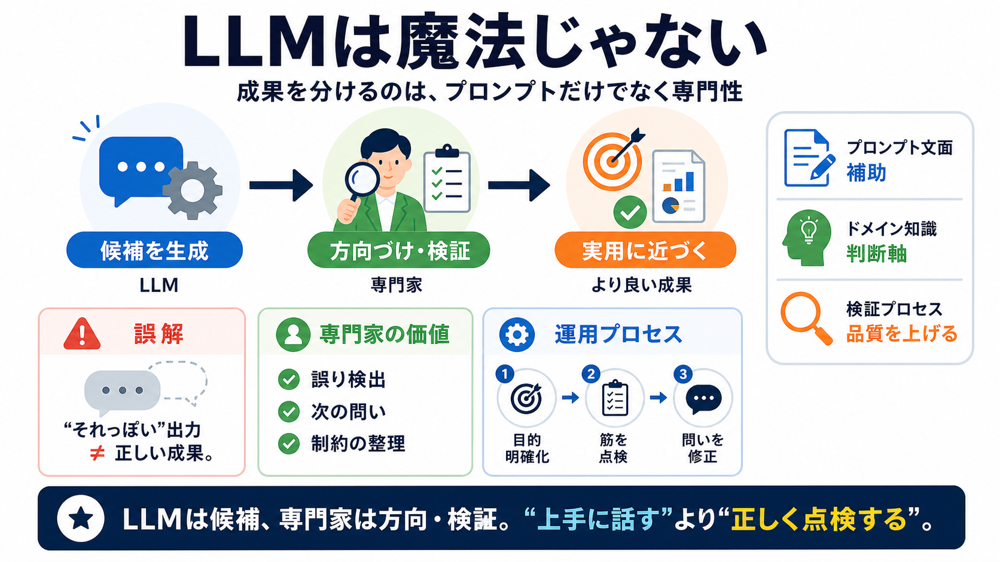

Cover
02 / 16
LLMは魔法じゃない
LLMs
reward
expertise
LLMの成果は「プロンプトの上手さ」だけで決まりません。多くの場合、最重要なのは
領域の専門知識
です（専門性＝ドメイン知識 / ドメインエキスパート力）。
2010年代は専門家か“偶然の検索”が必要だった。今は誰でもそれっぽい出力が得られ、
「技能は不要」
という誤解が広がりやすい。
Problem
03 / 16
誤解の正体
技能
不要
?
LLMが“それっぽい”文章やコードを出せるため、「プロンプト技術なんて要らない」と思われがちです。しかし本文の主張は、その見方は不完全だというものです。
よく起きること
“十分っぽい”成果が出る
見落とし
正しいか／目的に合うかは別問題
Metaphor
04 / 16
ガイド役
専門家は
審判
LLMは幅広く“それらしい”案を出しますが、誤りや筋の悪い誘導も起こります。専門家は「何が変か」「次に何を問うか」を見抜き、探索を修正する役目になります。
LLMの強み
それっぽい候補生成
LLMの弱み
間違い・誘導ミス
人間の価値
誤り検出と次手の設計
Evidence
05 / 16
タオの会話
短く
要点
を突く
テレンス・タオの例では、モデルの長い説明に逐語的に追従せず、要点へ応答する「専門家モード」が見られます。さらに「複雑すぎる」など、数学者としての違和感で押し戻す構図です。
一般利用
モデルの提案をそのまま進めがち
タオの特徴
方向転換・要点化で対話を収束
Evidence
06 / 16
飛躍する推論
提案に
乗り切らない
タオはモデルのルートにそのまま乗らず、飛躍しながら次の仮説や別アプローチを出します。ここで効くのは「言い回し」より、数学そのものの判断軸（何が変か）です。
LLMの出力
もっともらしい説明・次案
専門家の介入
誤り感の修正（複雑さ・方向の違和感）
Distinction
07 / 16
何が“本体”か
技術より
判断軸
重要なのは「上手いプロンプト」そのものより、専門家が持つ“どこを見て正しく／不適切を判断するか”です。短文化は補助であり、誤り検出と探索の整流が本筋になります。
プロンプト文面
言い方は影響するが決定打ではない
ドメイン知識
不適切さを見抜く
対話設計
次の問いへつなげる
Architecture
08 / 16
専門家がやること
良い質問を
抽出
ソフトウェア開発の経験では、コードベースの理論的理解と文脈（設計パターン・仕様）があるほどLLMの価値が増えます。専門知識があると「より単純に」「既にXがある？」などの問いが作れます。
専門知識が生む問い
単純化 / 既存機能の探索
文脈が生む問い
設計意図・制約に沿う言い換え
Enumeration
09 / 16
問いの型
“次に何を”
専門家はLLMに対して、探索の方向と制約を短い問いに落とし込みます。次の型が、ドメイン知識の有無で差になりやすい場面です。
i / 置換
馴染みの用語へ言い換える（表現の整合）
ii / 簡略
よりシンプルにできないか（最小化）
iii / 再利用
既にXをやっているのでは（重複排除）
Comparison
10 / 16
誰がボトルネック？
人間は
消えない
LLMが強くなるほど人間が不要になるとは限りません。むしろ、人間が「求める解の形や条件」を正確に抽出して渡す必要が残り、そこでボトルネックになり得ます。
モデルの能力
情報生成は得意
人間の難所
“欲しい解の条件”を正確に伝える
Process
11 / 16
共同作業へ
AI活用は
運用
モデル単体ではなく、ユーザー側の探索・修正・検証のプロセスと結びついて成果が決まります。つまり「プロンプトを書いて終わり」ではなく、共同作業として設計する必要があります。
Step i
目的・制約を明確化
Step ii
候補の筋を点検
Step iii
次の問いで探索を修正
Distinction
12 / 16
数学プロンプト反論
“無知でも成立”
?
反論として「数学プロンプトは無知でも成立した」という見方があります。しかし本文の編集部（edit）では、専門家チームが提案を検証・フィルタした可能性が示されます。
主張（反論）
専門家なしで同等に出せる
本文の応答
検証・フィルタが関与している
Evidence
13 / 16
検証体制の意味
責任は
プロセス
専門家のチェックがあるなら、成果はモデルだけの力では説明できません。重要なのは、出力をそのまま採用せず、誤りや筋の悪さを“運用で”除去することです。
リスク
もっともらしい誤りが混入
対策
専門家レビュー / フィルタ
結果
“正解の形”に近づく
Closing
14 / 16
結論の要点
専門性に
投資
LLM時代は、プロンプト技術より先に「対象領域を理解し、良い問い／悪い誘導を見抜く」ことが効きます。魔法ではなく、目的設定と評価が成果を決めます。
まとめ：
LLMは候補
、専門家は
方向・検証
。
“上手に話す”より“正しく点検する”が近道。
（専門性 / ドメイン知識 + 検証プロセス ＝ 実用の差）
References
15 / 16
参照（出典）
References
この要約は、ユーザー提示テキスト（「LLMs reward expertise」）に基づく内容です。記事中で言及される人物・概念を記します。
人物
テレンス・タオ（対話例）
主題
LLM、プロンプト、専門知識（ドメイン知識）、検証体制（edit）
追加で、元記事URLや具体的な会話ログがあれば、その情報に合わせて参照を正確化できます（現状は提示文の範囲のみ反映）。
REFERENCES
16 / 16
References
No references found